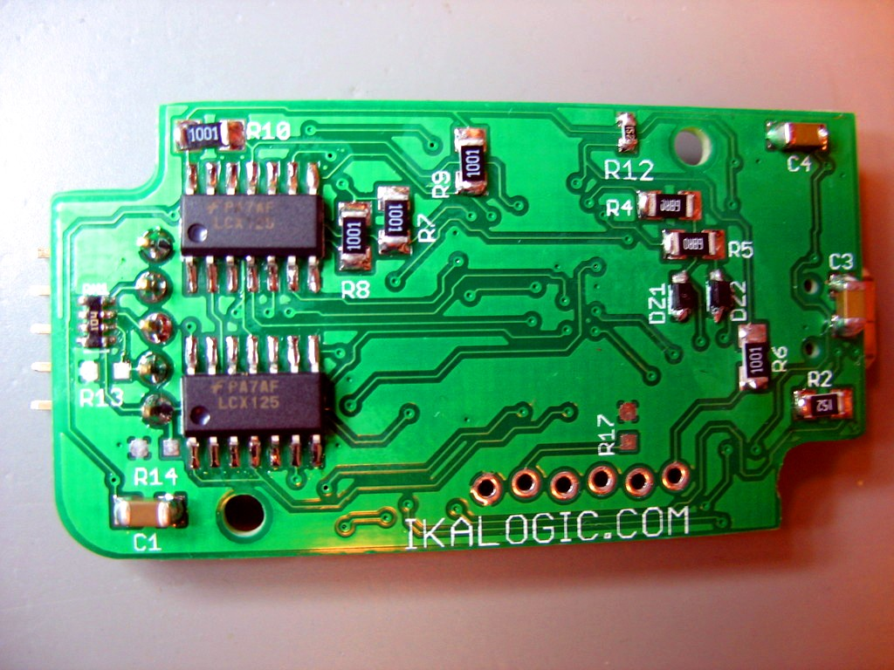

IKALOGIC Scanalogic-2¶
{kind=link}
IKALOGIC Scanalogic-2¶
| Status | supported |
| Source code | ikalogic-scanalogic2 |
| Channels | 4 |
| Samplerate | 20MHz |
| Samplerate (state) | — |
| Triggers | rising, falling, either |
| Min/max voltage | -0.7V — 5.5V |
| Threshold voltage | ? |
| Memory | 256ksamples/ch |
| Compression | none |
| Website | ikalogic.com |
The IKALOGIC Scanalogic-2 is a USB-based, 4-channel logic analyzer with up to 20MHz sampling rate.
See IKALOGIC Scanalogic-2/Info for more details (such as lsusb -vvv output) about the device.
Hardware¶
- Atmel ATmega168 PA (datasheet)
- 2x Fairchild Semiconductor 74LCX125
- 4x Microchip 23K256I (datasheet)
- 20MHz crystal
Photos¶
Ikalogic Scanalogic2 Pcb Soldered Back Rev2
Ikalogic Scanalogic2 Pcb Soldered Light
{kind=link}
Ikalogic Scanalogic2 Pcb Soldered Front
{kind=link}
Ikalogic Scanalogic2 Device Open Rev2
{kind=link}
{kind=link}
Ikalogic Scanalogic2 Device With Probes
{kind=link}
Ikalogic Scanalogic2 Pcb Soldered Front Rev2
{kind=link}
{kind=link}
Ikalogic Scanalogic2 Guide Back
{kind=link}
 Ikalogic Scanalogic2 Pcb Soldered Back
{kind=link}
Protocol¶
The IKALOGIC Scanalogic-2 is a HID based device which uses feature reports for bidirectional data transfers.
Starting an acquisition¶
An acquisition can be started by sending 128 bytes to the device, of which only the first 12 bytes (which are described below) have a meaning. All following bytes can have an arbitrary value. The device is capable to acquire up to 262120 samples whereas the vendor software limits it to 261888 samples. The number of pre- and post-trigger samples together must not exceed the sample limit of the device.
| Byte(s) | Value | Description |
|---|---|---|
| 0 | 0x01 | Command which indicates to start an acquisition. |
| 1 | 0x00 | This byte must always be 0x00. |
| 2-3 | Pre-trigger samples | Number of samples to acquire in multiples of 8 before the trigger occurs. |
| 4-5 | Post-trigger samples | Number of samples to acquire in multiples of 8 after the trigger occurs. |
| 6 | Samplerate | See table below for a list of all possible samplerates and their corresponding values. |
| 7 | Trigger type | See table below for all possible trigger types and their corresponding values. |
| 8 | Trigger channel | See table below for a list of all possible trigger channels and their corresponding values. |
| 9 | 0x00 | This byte must always be 0x00. |
| 10-11 | After trigger delay | Time that the trigger will be delayed in milliseconds. The trigger can be delayed from 0 to 65000ms. |
The acquisition process can be observed by the device status. The following example starts an acquisition with a samplerate of 5MHz and with 2384 samples before and 17456 samples after the trigger occurs. The trigger is configured to channel 2 with a rising edge and is delayed for 20000ms.
0x01 0x00 0x2A 0x01 0x86 0x08 0x02 0x01 0x03 0x00 0x20 0x4E 0x00 0x00 0x00 0x00
0x00 0x00 0x00 0x00 0x00 0x00 0x00 0x00 0x00 ...
The following table shows all possible samplerates.
| Value | Samplerate |
|---|---|
| 0x00 | 20MHz |
| 0x01 | 10MHz |
| 0x02 | 5MHz |
| 0x03 | 2.5MHz |
| 0x04 | 1MHz |
| 0x05 | 500kHz |
| 0x06 | 250kHz |
| 0x07 | 100kHz |
| 0x08 | 50kHz |
| 0x09 | 10kHz |
| 0x0A | 1.25kHz |
The trigger can only be configured to one of the four channels with an arbitrary trigger type. Alternatively the trigger can be configured to all channels with the trigger type Any edge only. Other trigger configurations might lead to an unpredictable behaviour. The following table shows the possible trigger channels and their corresponding values.
| Value | Channel |
|---|---|
| 0x00 | ALL |
| 0x01 | 0 |
| 0x02 | 1 |
| 0x03 | 2 |
| 0x04 | 3 |
The following table shows the possible trigger types and their corresponding values.
| Value | Trigger type |
|---|---|
| 0x00 | Falling edge |
| 0x01 | Rising edge |
| 0x02 | Any edge |
| 0x03 | No trigger |
Stopping acquisition¶
An acquisition can be stopped by resetting the device. After that the device status indicates whether the acquisition is stopped. If the device is ready the acquisition was stopped successfully. An other device status indicates that the device did not recognize the reset. In this case the reset needs to be performed again.
Receiving samples¶
Sample data can be received by requesting 128 bytes from the device. The meaning of the received sample packet is described below. Information on whether sample data is ready to receive can be obtained by the device status. The sample packets will be received sequentially per channel. If no more sample data is available the device status changes to ready.
| Byte(s) | Value | Description |
|---|---|---|
| 0 | 0x05 | This byte indicates a valid device status. |
| 1 | Channel | Channel number from 0x00 to 0x03. |
| 2 | Packet | Sequential packet number from 0x00 to 0xFF. Note that the packet number wraps around if more than 253952 samples (124 bytes per packet * 8 samples per byte * 256 packets) are requested. |
| 3 | 0x00 | This byte is always 0x00. |
| 4-127 | Sample data | Sample data where each byte contains 8 samples. The first byte contains the first 8 samples. |
Device status¶
The device status can be obtained by requesting 128 bytes from the device. The first 2 bytes of the response (which are described below) have a meaning only. All following bytes can be ignored. Note that it might take a short time until a valid device status is received. In the meantime the last valid data of the device buffer will be received.
| Byte(s) | Value | Description |
|---|---|---|
| 0 | 0x05 | This byte indicates a valid device status. |
| 1 | Status | See the table below for a description of all possible status codes. |
All possible status codes are listed in the following table.
| Value | Description |
|---|---|
| 0x60 | Sample data is ready to receive. |
| 0x61 | Device is waiting for a trigger event. |
| 0x62 | Sampling in progress. |
| 0x63 | Device is ready. |
Device information¶
Device information can be requested by sending 128 bytes to the device, of which only the first byte (which is described below) has a meaning. All following bytes can have an arbitrary value.
| Byte(s) | Value | Description |
|---|---|---|
| 0 | 0x0a | Command which indicates to request device information. |
After these bytes are sent the device information can be obtained by requesting 128 bytes from the device. The first 7 bytes of the response (which is described below) have a meaning only. All following bytes can be ignored.
| Byte(s) | Value | Description |
|---|---|---|
| 0 | 0x0a | This byte indicates valid device information. |
| 1-4 | Serial number | Serial number of the device which is also the Unix time of the production date. |
| 5-6 | Firmware version | Major and minor version of the firmware. |
The following example shows the information of a device with the serial number 1371371152 and the firmware version 1.3.
0x0A 0x90 0x76 0xBD 0x51 0x01 0x03 0x00 0x00 0x00 0x00 0x00 0x00 0x00 0x00 0x00
0x00 0x00 0x00 ...
Idle¶
The device can be set to idle state by sending 128 bytes to the device, of which only the first byte (which is described below) has a meaning. All following bytes can have an arbitrary value.
| Byte(s) | Value | Description |
|---|---|---|
| 0 | 0x07 | Command which indicates to set the device to idle state. |
If the device is not in idle state it possibly will reset itself after a few seconds without being used and thereby close the connection. Instead of setting the device to idle state it is also possible to periodically send commands to the device to ensure it will not close the connection itself. Note that the device status can not be obtained if the device is in idle state. It is recommended to enter idle state when the device status is ready only and reset the device to leave idle state. To prevent that the device resets itself and thereby reattaches to the bus every time the device was used it is also recommended to set the device to idle state before closing the connection.
Reset¶
The device can be reset by sending 128 bytes to the device, of which only the first byte (which is described below) has a meaning. All following bytes can have an arbitrary value.
| Byte(s) | Value | Description |
|---|---|---|
| 0 | 0x02 | Command which indicates to reset the device. |
After the reset is performed the device status changes to ready. It is recommended to reset the device after a new connection is established to ensure it has left idle state.